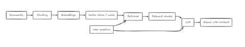
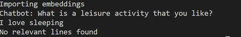
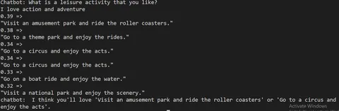
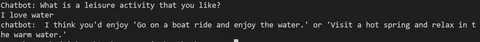

Transforming Chatbot Interactions with Retrieval Augmented Generation
By Sukalyan RoyPublished Updated 9 min read

Since ChatGPT was first unveiled, one of my persistent doubts has been how it will work in applications requiring proprietary or post-2022 data.
One approach to solve this is to make what's called a RAG.
Here I will outline the ideas behind this as I understand them, and build my own version of it using Langchain and other tools. (Though in the next post)
So first of all, in this part, we will deal with, what is a RAG all about? The history and theory behind it, in as non technical terms as I can.
(And if you need further background on LLMs, check out this post here)
TL;DR #
-
RAG gives a chatbot external context instead of relying only on model memory.
-
The basic loop is: collect documents, chunk them, embed them, retrieve relevant chunks, and pass them to the LLM.
-
This helps with private notes, project docs, PDFs, and changing information.
-
Retrieval quality matters as much as generation quality.
-
Later posts in this series improve this baseline with agentic RAG and hybrid BM25 retrieval.
Project status
This post is the conceptual starting point for my local RAG project. At this stage, the important idea is the pipeline itself. Later updates add MCP support, hybrid retrieval, and more control over query handling.
What is a RAG? #

Suppose you want to develop a chatbot or assistant, that deals with proprietary or highly specific data that is new, and certainly not within the web crawled general data the model has been trained on.
There is the method of fine-tuning models, but that takes a massive amount of compute resources, every time you fine-tune.
What if language models could refer to a set of data, similar to a student using books for an assignment, rather than learning the entire book's content?
This approach is what's implemented by a RAG or Retrieval Augmented Generation system.
A possible workflow for making such a system would be as follows:
We first take a LLM(large language model) and then connect it to our code, using some APIs.
Next, we convert the corpus of data into a vector of numerical representations using embeddings. This representation is then stored into a vector database.
When the user asks a query, that query is converted into a vector representation, then a semantic search is done, to find relevant data within the vector database.
All of which basically means, convert it to a number, and check how similar that number is to another number when retrieving.
That relevant data is then passed to the LLM, using which it returns a tailored response.
Why do we need it? #
Firstly, in situations where there is a massive set of documents for a product or a tool, it can be difficult for newbies to just search for the right keywords and get what they are looking for with the first couple searches.
Notwithstanding what it says about the actual writing of such documentations themselves, I hope we can both agree, that there needs to be a solution apart from a complete rewrite or blindly polluting the LLM context window with brute force.
One such solution could be implemented by using really fast small scale LLMs whose job is to parse the user’s search’s meaning, somehow figure out which parts of the documentation is actually relevant (the most tricky part of this whole thing) and then just summarizing the entire content of those documents into the LLM context such that the user can now talk to the bot about it and clear his doubts. Perhaps have it generate some examples that can help them get started.
Some production ready implementations of this idea already exists in several documentations of widely used tools, primarily seen within the docs of AI tools themselves, trying to showcase their functionality in their own documentation sites. But here we will be implementing only a very simple, local, and terminal based implementation of it, running on dummy data.
Why should we care if Agents exist? #
Now, I wrote the first versions of this post way back in 2023 and then Agentic AI wasn’t as mainstream as it is now. One might argue that existing solutions invalidate the need for spending so much effort making all this, as Claude Code, Chatgpt Codex, Gemini or even Google’s NotebookLM can achieve this.
As it is with most of my projects, the goal is not to reinvent the wheel without any reason, but actually understand several potential ways these existing tools work, and there is no better way to learn this, than by making something ourselves.
(PS: If there is demand for it, I will come up with a detailed guide on Agentic AI after this series, tying up my Vibecoding post and RAG post together)
Making a very simple version of it #
For a very simple version of RAG without any of the fancy vector databases and embeddings, we use a basic similarity measure directly on the corpus and user query.
The one we use is called Jacquard Similarity and uses the intersection of words to find similarity. As we will see later, this is not an accurate measure.
# Description: This file contains the code for the RAG model
# Example: reuse your existing OpenAI setup
from openai import OpenAI
corpus_of_documents = [
"Take a leisurely walk in the park and enjoy the fresh air.",
"Visit a local museum and discover something new.",
"Attend a live music concert and feel the rhythm.",
"Go for a hike and admire the natural scenery.",
"Have a picnic with friends and share some laughs.",
"Explore a new cuisine by dining at an ethnic restaurant.",
"Take a yoga class and stretch your body and mind.",
"Join a local sports league and enjoy some friendly competition.",
"Attend a workshop or lecture on a topic you're interested in.",
"Visit an amusement park and ride the roller coasters."
]
# This function calculates the similarity by finding the intersection over union of the sets
def jaccard_similarity(query,document):
query = query.lower().split(" ")
document = document.lower().split()
intersection = set(query).intersection(set(document))
union = set(query).union(set(document))
similarity = len(intersection)/len(union)
return similarity
def return_response(query,corpus):
similarities = []
for doc in corpus:
similarity = jaccard_similarity(query, doc)
similarities.append(similarity)
most_viable_response = similarities.index(max(similarities))
return corpus_of_documents[most_viable_response]
user_prompt = "What is a leisure activity that you like?"
user_input = input(user_prompt+"\n")
relevant_document = return_response(user_input, corpus_of_documents)
prompt = """
You are a bot that makes recommendations for activities. You answer in very short sentences and do not include extra information.
This is the recommended activity: {relevant_document}
The user input is: {user_input}
"""
prompt = prompt.format(relevant_document=relevant_document, user_input=user_input)
# Point to the local server
client = OpenAI(base_url="http://localhost:5555/v1", api_key="lm-studio")
completion = client.chat.completions.create(
messages=[
{"role": "system", "content": prompt},
{"role": "user", "content": "Compile a recommendation to the user based on the recommended activity and the user input."}
],
model="Mistral7b",
temperature=0.7,
)
output = "".join(completion.choices[0].message.content)
print(output)This is adapted from the tutorial here https://learnbybuilding.ai/tutorials/rag-from-scratch. I had to change some API parts such that I could use a Local LLM using LMStudio and it's local server API system, matching it with the OpenAi api format.
This will send the relevant sentences to the LLM along with the query and the LLM will generate the rest of the response.
Improving Semantic Similarity for Real-World Applications #
While that initial code worked in some cases, it's not robust enough for real-world production software.
To build a more practical solution, we'll dive into using a powerful transformer model and cosine similarity to accurately measure the semantic relationships between sentences. This technique is widely used in modern natural language processing applications, from chat-bots to search engines, to surface the most relevant information for users.
A better version #
In this one, we shall try to use a transformer model to encode the corpus into an embedding format then use the Cosine similarity measure to find the semantic similarity between vectors.
Semantic similarity essentially means how close the meanings of the sentences are to each other.
Cosine Similarity finds out the angle between different vector representations such that even if the points are far apart due to different size, if their meanings are similar then the angle will be smaller irrespective of size.
Thus the smaller the angle, the more similar the semantics are.
One thing to note is that the cosine similarity function returns a score that is essentially better if it's higher. The cosine similarity score is inverse of the angle between the vectors.
In the code below, the auto-download feature of the sentence transformers might not work at times, so you can get the model directly from the below link
https://public.ukp.informatik.tu-darmstadt.de/reimers/sentence-transformers/v0.2/
Code #
# Description: This file contains the code for the RAG model
# Example: reuse your existing OpenAI setup
from openai import OpenAI
from sentence_transformers import SentenceTransformer
from sklearn.metrics.pairwise import cosine_similarity
import pickle
import os
model = SentenceTransformer('all-MiniLM-L6-v2')
corpus_of_documents = []
doc_embeddings = []
try:
if os.path.exists("embeddings.pkl"):
with open("embeddings.pkl", "rb") as fIn:
print("Importing embeddings")
stored_data = pickle.load(fIn)
corpus_of_documents = stored_data['sentences']
doc_embeddings = stored_data['embeddings']
else:
# Now we use the transformer model to make embeddings
# load the corpus text file
print("Creating embeddings")
with open('corpus.txt', 'r') as file:
content = file.read()
sentences = content.split(',')
corpus_of_documents = [sentence for sentence in sentences]
doc_embeddings = model.encode(corpus_of_documents)
with open("embeddings.pkl", "wb") as fOut:
pickle.dump({'sentences': corpus_of_documents, 'embeddings': doc_embeddings}, fOut)
except Exception as e:
print(f"An error occurred: {e}")
first_prompt = "Chatbot: What is a leisure activity that you like?"
user_input = input(first_prompt+"\n")
query_embedding = model.encode([user_input])
similarities = cosine_similarity(query_embedding,doc_embeddings)
# After we have found the similarity scores, we have to sort it in descending order
# To find the most similar values
indexed = list(enumerate(similarities[0])) # This is the tuple form of the list
sorted_index = sorted(indexed, key= lambda x: x[1], reverse=True)
# Here we use the lambda function to sort the elements based on the 1th value of the tuple
# which is the similarity score of the tuple. then we reverse it to get descending order.
# Now that we have our similarity measures, we take give the final response
threshold = 0.3 # This decides whether a similarity is high enough or not.
recommended_documents = []
for value,score in sorted_index:
if score > threshold:
# formatted_score = "{:.2f}".format(score)
# print(f"{formatted_score} => {corpus_of_documents[value]}")
recommended_documents.append(corpus_of_documents[value])
# The above lines take the most relevant documents and then we pass this to the prompt
system_prompt = """
You are a bot that makes recommendations for activities. You answer in short sentences
These are the potential activities:
{relevant_document}
The user input is: {user_input}
Use less linebreaks
"""
if(recommended_documents == []):
print("No relevant lines found")
else:
system_prompt= system_prompt.format(relevant_document=recommended_documents, user_input=user_input)
user_prompt = "Based on the potential activities and the user input, recommend me some activities"
# Point to the local server
client = OpenAI(base_url="http://localhost:1234/v1", api_key="lm-studio")
completion = client.chat.completions.create(
messages=[
{"role": "system", "content": system_prompt},
{"role": "user", "content": user_prompt},
],
model="llama-3.2-3b-instruct",
temperature=0.7,
)
output = "".join(completion.choices[0].message.content)
print("chatbot: " + output)Does it work? #
Yes it does.
This code is ran based on a separate text file, which has the same kinds of lines as the first test, but with a lot more lines to make this more interesting.
If the embedding file exists, it will use it directly. If it does not, then it will make one in the same directory.
I had to add some extra logic to this, because when the queries are simple and about generic things like leisure activities, even if there are no relevant lines, the LLM will try to reply it on it’s own. This is not a problem for casual things like this but you really do not want your chatbot to generate random knowledge when important queries are being made on sensitive documentations.

When asked something that is within the corpus, the following happens,

This show all the tasks within the corpus that was above the threshold. And once we remove the lines to show them, we get the final thing

What’s next? #
To make this more useful in a production environment, you might want to write a script to take your documents and convert it into a standard text or Json format and use that instead.
In-fact i have done exactly that for a later chatbot project of mine, which incidentally does not use Vector embeddings, rather using a system of summarization to retrieve relevance.
This part is adapted from https://learnbybuilding.ai/tutorials/rag-from-scratch-part-2-semantics-and-cosine-similarity
PS: I found a weird kind of alternative way to do these embeddings. Though it’s technically not embeddings but some form of ratio? Just check this video out.
One way of doing this #
Here I propose one mental model of thinking about a more structured way of running RAGs:
Jsonify.py #
The main method of storage of our data will be in Json or similar formats so that they can be efficiently stored and also efficiently transferred back and forth between the LLM and the web servers should we choose to deploy it somewhere.
The first step then, is to convert all our documentation into Json. That’s where this program comes in.
Alternatively, once we have something to properly convert the documents into structured format, we can also store it in a Database as JSONB.
The goal is to maintain human readability as much as possible.
LLM.py #
This is a general piece of code that will work with any program that needs an LLM interface.
The actual connection with an LLM, local or online will be implemented here, along with whatever useful helper functions we might need that are frequently needed.
Chatbot #
This is the actual implementation of the chatbot that chats with the user and retrieves relevant information.
-
todo: the relevant files are rechecked with every single query, make sure that they stay in the memory until and unless the next query is wildly different from the previous ones.
-
How do we decide if the query invalidates an existing file in memory and/or requires a new one? (Work in progress)
Potential related use #
I tried to change it somewhat to turn it into a college notes summarizer using a completely different approach that still doesn’t use the actual Sentence transformer or vector embedding methods yet, but it is unoptimized, slow and impractical for most use cases until improved. Even then, the outputs it gives are pretty decent.
Still, when done right it can be a great help to students. So if there is sufficient response from you guys, I will actually go in there, clean up and optimize the code and release a post on the usable version in here sometimes later.
Until then, Google’s NotebookLM has been of quite a lot of help to me for Semester exams. And if you just want something usable without reinventing the wheel, that is exactly what you need.
Conclusion #
So that was my (perhaps) last naive implementation of a RAG. At this point, the limiting factor has become just how slow it is to push raw walls of texts into the LLM and letting it decide which one is relevant.
Later on, once the metadata is put into an embedding, it will become much faster to let vector logic do it’s work, and let the LLM do what it’s actually meant to do, process the text and generate insights.
And it has been quite a long time since i have touched on this topic; Rewriting the post made me think about what i could potentially do next, stay tuned for that.
If you want to learn more about LLMs, check out this post here
And you can check the next post in this series: here
See you there!